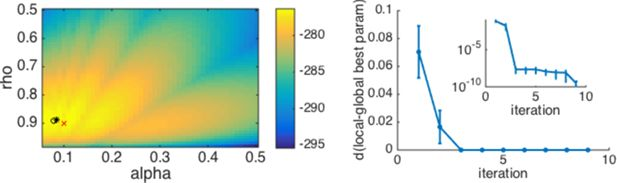
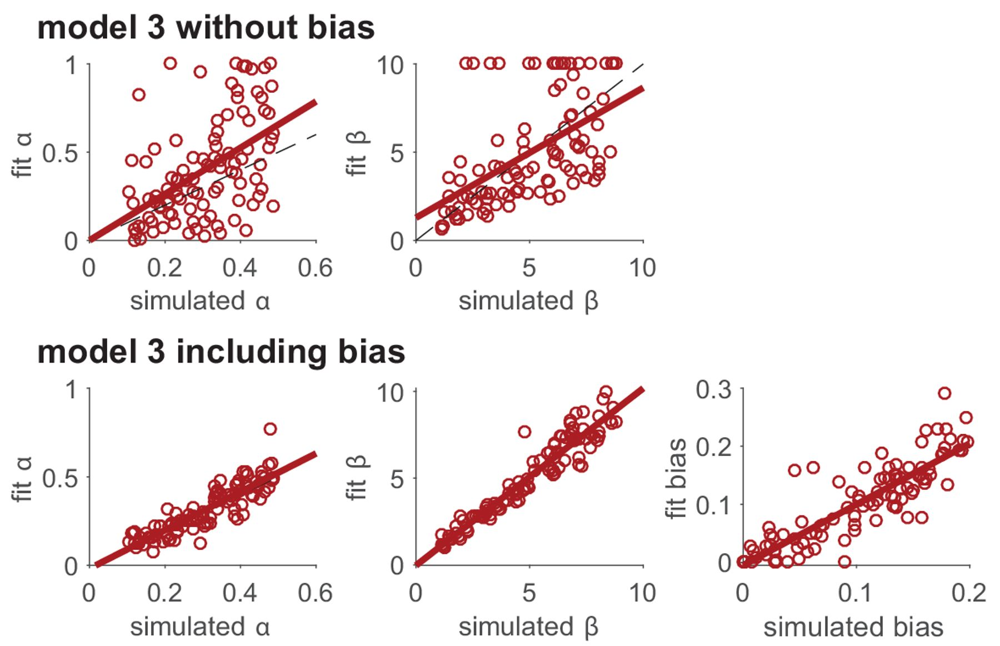
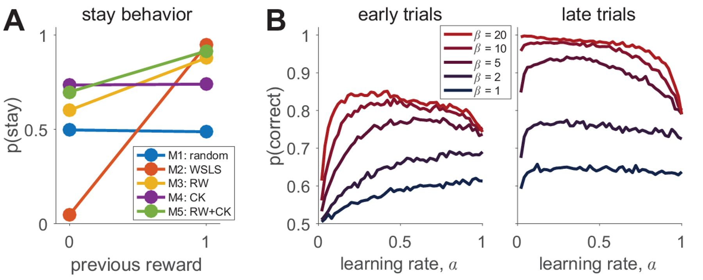
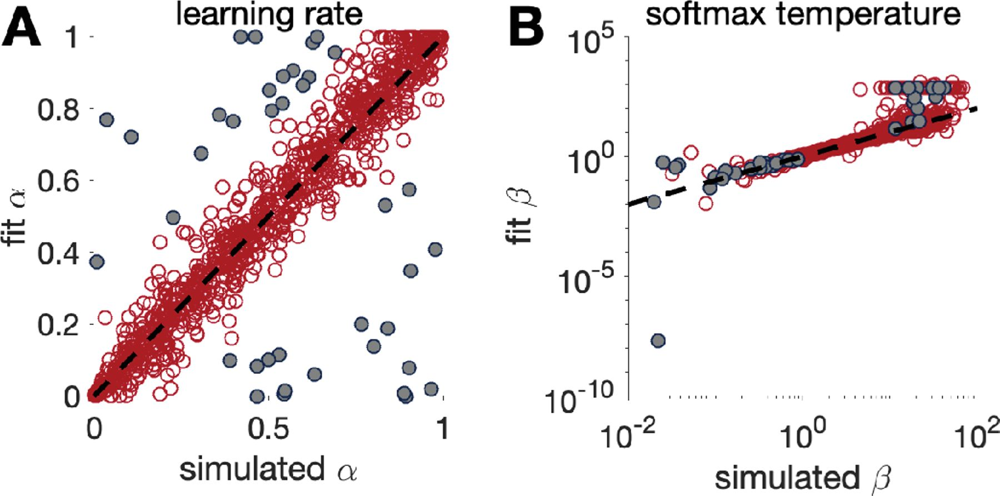
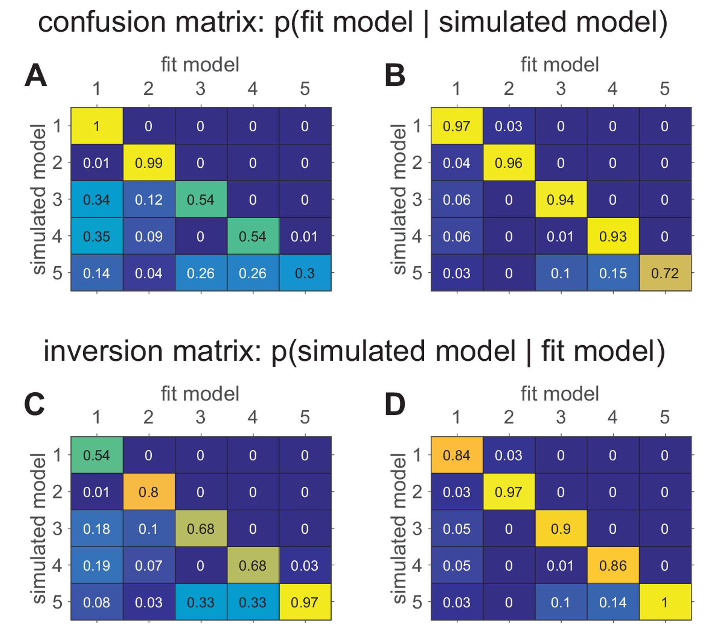
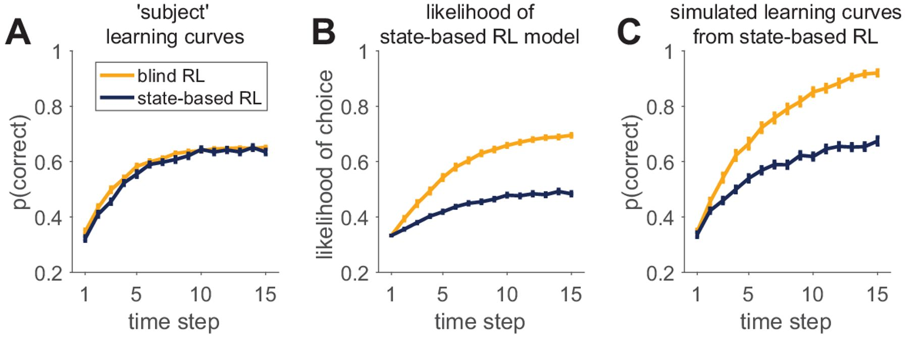
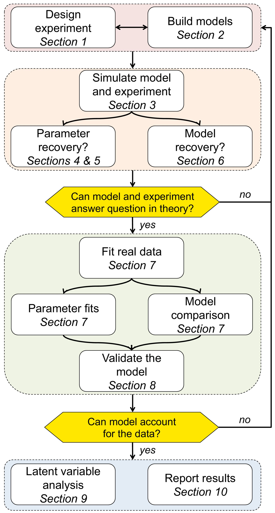

心理学 × 计算建模
从选择行为
理解计算建模
从“为什么总选同一个箱子”开始，把心理学解释变成可计算、可检验的模型。
同一个行为，为什么有不同解释？
一个人总选同一个奖励箱，是因为它曾经给过奖励，还是因为这个人习惯重复刚才的动作？在给心理过程命名之前，我们先看这些解释能否对接下来的行为作出不同预测。
先经历一次奖励选择
面前有两个奖励箱，每轮只能打开一个。打开后可能得到1分，也可能没有奖励。两个箱子的奖励概率固定，但你最初并不知道。随着选择不断进行，我们会得到一份简单的记录：每轮打开了哪个箱子，又得到了多少奖励。
还没有作出选择。
这个任务是双臂老虎机任务：每次从两个选项中选择一个，只看到所选选项的反馈。论文示例设置1000轮，两个选项的奖励概率分别为0.2和0.8。
同一段行为，可能有不同解释
下面这段记录会贯穿后面的计算。它是一段设定的经历：第1轮选A得奖，第2轮仍选A却没有得奖，第3轮转向B并得奖，第4轮又选A。
| 轮次 | 1 | 2 | 3 | 4 |
|---|---|---|---|---|
| 选择 | A | A | B | A |
| 奖励 | 1 | 0 | 1 | 1 |
如果只遵循“得奖就保持、没得奖就切换”，第3轮在B得奖后，下一轮会偏向B；如果之前一直偏好A，下一轮仍可能偏向A。两种解释对同一段历史作出了不同预测。观察第4轮有助于比较它们，但单次选择仍有偶然性。
模型的工作，就是明确这些解释会怎样利用经历，并算出下一次选择的概率。概率预测允许偶然选择；一个动作发生了，并不意味着模型事先必须给它100%的概率。
先分清环境、期待与选择
箱子的实际奖励概率、模型对它的估计、下一次选择它的概率，是三个不同的问题。分清它们，才能理解学习究竟改变了什么。
μ、Q和p分别回答什么问题？
三个量可能都在0到1之间，含义却不同：μ是箱子实际给奖励的概率；Q是模型根据经历形成的收益估计；p是模型下一次选择该箱子的概率。奖励r则是已经发生的结果，只能是0或1。
- 环境 μ实际上多容易得奖？
由任务设定，参与者最初不知道。
- 估计 Q目前预计它有多好？
模型根据过去的选择和反馈逐渐更新。
- 选择概率 p下一次多可能选它？
由当前估计与选择规则计算。
- 实际反馈 r这次究竟有没有得奖？
概率0.8也允许这次得到0分。
μ控制的是奖励机会，不是这一轮的分数
把同一个箱子连续打开40次。每个圆点是一轮，实心“1”为得到奖励，空心“0”为没有奖励。固定同一组随机数，只改变奖励概率μ。
μ由任务设定；参与者的Q是根据经历形成的估计。概率0.8表示每次有80%的奖励机会，40次的期望奖励次数为32，但某一次模拟不必恰好得到32次。
下面固定对B的估计为0，只改变A的真实奖励概率μ(A)或当前估计Q(A)。选择规则暂时固定，具体公式会在学习选择规则时介绍。
这个比较暂不生成新反馈，所以改变μ不会立即更新Q。实际任务中，环境变化要先改变收到的反馈，才可能通过学习影响估计和选择。
Q表示预期收益。在当前奖励只有0和1的任务中，它也落在0到1之间；换用其他奖励单位时，Q的尺度会随之改变。数值范围相同，并不意味着Q与概率是同一个概念。
反馈怎样改变期待？
一次得奖会提高期待，一次落空也可能降低期待。学习率描述的是每次调整的幅度，而不是一个人总体的学习能力。
从两次反馈理解学习率
沿着四轮记录，从Q(A)=Q(B)=0开始。第1轮选A得1分，如果吸收新旧差异的一半，Q(A)就变成0.5。第2轮仍选A，却得到0分；再次吸收一半差异，Q(A)降到0.25。
第2轮：0.5 + 0.5×(0−0.5) = 0.25
同一条规则既能提高期待，也能降低期待。用α表示吸收比例，用δ表示实际结果与预期之差：
Q新(所选项) = Q旧(所选项) + αδ
α是学习率，范围为0到1；r是本轮奖励。未选选项没有新反馈，Q保持不变。下面从参考计算中取出某一轮，固定该轮选择前的Q与奖励，只改变这一次更新的α。
α=0时，新反馈不改变估计；α=1时，所选项的估计直接变成本轮奖励。较大的α跟随反馈更快，也更容易受到单次偶然结果影响。
这种按预测误差更新价值的规则，称为Rescorla–Wagner学习规则，简称RW。后面会把它与softmax选择规则结合，用来模拟和拟合奖励选择。
学习的推导与连续轨迹
展开：加权平均推导与更多反馈下的学习轨迹（独立例子）
假设目前对A的平均收益估计为0.4，这次打开A却得到了1分，结果比预期高出0.6。如果把这份差异的四分之一加入旧估计，新估计就是0.55。学习率α表示的正是这个吸收比例。
这个式子把旧估计与新反馈作加权平均：α越大，新反馈占的权重越大。将括号展开，再把与旧估计有关的项合并，就得到更容易看出变化量的写法：
δₜ = rₜ−Qₜ(cₜ)
cₜ是本轮选中的选项，Qₜ(cₜ)是选择前对它的价值估计。δₜ称为奖励预测误差：结果高于预期时为正，低于预期时为负。只有被选选项的Q更新，未选选项保持不变。
| 公式中的量 | 本例取值 | 来源或作用 |
|---|---|---|
| Qₜ(cₜ) | 0.4 | 选择前的模型估计 |
| rₜ | 1 | 实际收到的反馈 |
| δₜ=rₜ−Qₜ(cₜ) | 0.6 | 由反馈与预期计算的差异 |
| αδₜ | 0.15 | 本次真正加入旧值的变化量 |
| Qₜ₊₁(cₜ) | 0.55 | 下一轮使用的新估计 |
保持同一次反馈，只改变学习率
固定旧Q(A)=0.4、实际奖励r=1，所以预测误差始终是0.6。调节α只改变吸收这份差异的比例。
把一次更新连成一段学习经历
为单独观察学习，本例固定每轮都选A、初始Q(A)=0，反馈序列也预先给定。两条线经历完全相同的反馈，只有α不同。
横轴0是起点，其余位置是收到该轮反馈后的Q。每轮固定选A，使曲线差异只来自学习率。
从曲线可以看到，α较大时，估计会更快跟随新反馈，也更容易因一次偶然落空而波动。α较小时，过去经验的影响保留得更久，但环境改变后也可能调整得较慢。因此，学习率并不是越大越好，它是否合适取决于环境有多稳定、反馈有多嘈杂。
初始期待也是模型假设
连续模拟沿用论文设定，将初始Q(A)、Q(B)都设为0，因此首轮各以1/2的概率选择。改变初始值会影响早期学习；这是一项需要说明的建模假设。
期待怎样影响下一次选择？
知道模型期待什么，还不足以知道它会选什么。选择规则把当前价值转成动作概率，与反馈后的学习更新分工不同。
期待怎样变成选择概率？
第1轮结束后，参考模型的Q(A)=0.5、Q(B)=0。A目前看起来更好，但这不等于下一轮一定选A。逆温度β决定价值差对选择有多大影响。
p(B) = 1 − p(A)
exp(x)=eˣ，e约为2.718。这是两个选项时的softmax公式：把价值差转成0到1之间的概率。β=2时，第2轮选择A的概率为1/(1+e⁻¹)≈0.731。
提高β会使选择更集中于当前Q较大的选项；如果B的Q更大，提高β就更偏向B。两者相等时，无论β多大，概率都各为1/2。β改变选择，不直接更新Q。
把学习和选择连成同一段经历
现在把两条规则接起来，回到同一份记录。参考参数固定为α=0.5、β=2，初始Q均为0。每轮先用旧Q预测选择，再读取实际奖励，最后更新所选项的Q。这些参数只是计算参照，不是由四轮记录推断出的心理真值。
第3轮选择B时，模型还没有看到B随后得到的奖励。预测必须按当时的旧Q计算，这个时间顺序在后面的拟合中同样重要。
选择规则的推导
展开：softmax的归一化推导与其他价值差（独立例子）
例如，当前Q(A)=0.6、Q(B)=0.2，A的估计价值比B高0.4。模型用β决定这0.4的差距会带来多大的选择偏好，再通过softmax规则算出两个选项的概率：
exp(x)=eˣ，把选择分数转成正权重；分母将各选项的权重相加，使最终概率之和为1。∑表示求和，i遍历K个选项。两个选项时，分子与分母同除exp(βQᴬ)，得到：
取Q(A)=0.6、Q(B)=0.2、β=2，可以逐步算出：
| 步骤，β=2 | A | B |
|---|---|---|
| 价值乘β | 2×0.6=1.2 | 2×0.2=0.4 |
| 取指数形成正权重 | exp(1.2)≈3.320 | exp(0.4)≈1.492 |
| 除以总权重4.812 | 3.320/4.812≈0.690 | 1.492/4.812≈0.310 |
这是当前价值差，不是奖励概率差。固定β时，差越大越偏好A；负值表示当前更偏好B。
保持价值差不变，β控制偏好有多集中。拖动后立即显示概率；这个操作不执行学习，也不改变Q。
“逆温度”来自β=1/τ这一写法，其中τ为温度（β>0）。β本身不是概率，可以大于1。比较β时还要保持奖励与Q的尺度一致：若价值差放大10倍、β缩小10倍，选择概率不变。
同时观察α与β的作用
展开：从已有估计Q(A)=0.4、Q(B)=0.2开始的独立比较
同样选A并得到1分，有人会明显提高对A的期待，有人只稍微调整。即使两个人的期待相同，他们下一次也未必作出同样的选择。模型用参数描述这些差别：学习率α决定一次反馈会让期待改变多少，逆温度β决定价值差会多强地影响选择。
看见参数怎样进入计算
固定旧Q(A)=0.4、Q(B)=0.2，本轮选A并得到1分。拖动α，绿色圆点显示新的Q(A)，绿色线段显示本次更新量；旧估计与奖励目标保持不动。
收到反馈后：α控制更新多少
Q新(A) = Q旧(A) + αδ
先算实际奖励与原先估计的差，再把其中α的比例加入旧估计。本轮选A，所以只更新A；Q(B)保持不变。
作出选择前：β控制概率偏向哪一项
= 1 / {1 + exp[−β(Q(A) − Q(B))]}
先比较两个选项的价值，再用β调整差异对选择的影响。p(B)=1−p(A)。反馈前使用旧Q，下一次选择使用更新后的Q。
符号：Q是奖励价值的估计，r是实际奖励，δ是奖励预测误差，α是学习率，β是逆温度，p(A)是选择A的概率。exp(x)=eˣ，e约为2.718；这个运算把分数变成正权重，再归一化为概率。
α只直接改变反馈后的更新；β只直接改变由Q计算出的选择概率。这轮选择与奖励保持固定。
这些数值来自哪里？
| 类别 | 例子 | 谁决定、何时变化 |
|---|---|---|
| 实验条件 | 奖励概率μ、选项数K、试次数T | 研究者设定任务。例如μ(A)=0.2表示每次选A有20%概率得到1分；参与者最初不知道它。 |
| 模型参数 | 学习率α、逆温度β | 模拟时由我们指定；分析真实选择时由拟合估计。同一个体的一段任务内保持固定。 |
| 模型的内部状态与预测 | 价值Q、预测误差δ、选择概率p | 由参数和经历计算，通常随反馈逐轮变化。 |
| 实际记录 | 选择c、奖励r | 每轮真正发生的事件。奖励概率0.2并不意味着这轮得到0.2分；本任务这轮只能得到0或1分。 |
符号对照
| 记号 | 含义 | 在本例中 |
|---|---|---|
| t，T | 当前轮数；总轮数 | t=1…T |
| K，k | 选项总数；选项编号 | K=2，k为A或B |
| μᵏ | 选项k的真实奖励概率 | 环境设定；参与者最初未知 |
| cₜ，rₜ | 第t轮实际选择与奖励 | 观察数据：A/B，0/1 |
| Qₜᵏ | 选择前对选项k的价值估计 | 模型隐变量，不直接等于真实μ |
| α | 学习率，0到1 | 每次新反馈改变估计的幅度 |
| β | 逆温度，非负 | 价值差对选择概率的影响 |
| pₜᵏ | 模型预测选k的概率 | 随历史和模型参数变化 |
| θ，m | 参数集合；模型身份 | RW中θ=(α,β) |
| CKₜᵏ | 近期选择倾向的痕迹 | 由选择更新，不需要奖励 |
记号的上下标有明确作用：Qtk的下标t表示时间，上标k表示选项，并不是k次方；ptk同理。θ是一组参数，不是一项观测。带帽记号θ̂表示从数据中估计得到的参数。
怎样从行为记录估计参数？
前面的计算都先指定了α、β。面对真实参与者，我们只看到选择和反馈，需要反过来寻找能够较好解释记录的参数。这就是拟合。
把逐轮预测合成似然
一组参数对每轮实际选择给出了概率。似然把这些逐轮预测合在一起，帮助我们比较不同参数对整段记录的解释。
假设已经选定模型和一组参数，我们就能沿着记录逐轮计算：在当时已有的经历下，模型给实际发生的那个选择分配了多大概率？把这些条件概率相乘，就得到了这段选择记录的似然：
LL(θ)=ln L(θ)=Σₜ ln p(cₜ | 历史, θ)
NLL(θ)=−LL(θ)
θ表示待估参数的集合；L是似然，LL是对数似然，NLL是负对数似然。ln为自然对数。取对数把连乘变成求和，避免许多小概率相乘后过小。
这个乘积来自概率的链式分解，允许当前选择依赖过去经历。环境的奖励机制不含待估心理参数时，可以沿已观察到的选择和反馈，计算用于拟合的条件选择似然。
∏表示把每一轮的数相乘，Σ表示逐项相加。这里每轮使用的是实际动作的概率：如果实际选B，就使用p(B)=1−p(A)。例如第3轮p(A)约为0.622，但实际选了B，因此这一轮用于似然的概率约为0.378。
沿同一段经历逐轮计算
固定α=0.5、β=2，初始Q(A)=Q(B)=0。以下四轮记录用于说明计算：每行先预测选择，再读取反馈并更新。
| 轮次 | 选择前Q(A),Q(B) | 实际选择；反馈 | 所选动作概率 | 该轮NLL |
|---|---|---|---|---|
| 1 | 0，0 | A；1 | 0.500 | 0.693 |
| 2 | 0.5，0 | A；0 | 0.731 | 0.313 |
| 3 | 0.25，0 | B；1 | 0.378 | 0.974 |
| 4 | 0.25，0.5 | A；1 | 0.378 | 0.974 |
记录不变，改变解释它的参数
四轮动作与奖励保持不变，只改变候选α、β。每组参数都会重新沿这段历史计算Q，给实际选择分配概率，再计算各轮的负对数概率。下面的条长表示每轮对总NLL的贡献，越长表示该轮实际选择在这组参数下越出乎意料。
同一份数据下，较小的NLL表示较好的拟合。但这里仅有四轮，不能据此作出可靠的个体心理推断；参考参数也不必使这份设定记录的NLL最低。下一例使用更长的模拟记录，展示参数搜索的完整地形。
从一组参数的分数，到整张似然地形
刚才我们每次比较一组候选参数。若把许多组参数的NLL同时画出来，就得到一张似然地形图。这里另外生成一段更长的模拟记录，检查最佳拟合点与已知生成参数的关系。
为了知道拟合结果离答案有多远，这里先用已知的α、β生成一段RW行为记录。拟合时只使用选择和奖励，生成时的参数留到最后作对照，不交给拟合程序。
生成虚拟参与者时的学习率真值。0.3表示每次吸收预测误差的30%；它不直接输入后面的拟合搜索。
生成虚拟参与者时的价值敏感度真值。固定Q差时，值越大越集中选择较高价值选项。拟合仍需从选择记录中估计它。
这个虚拟参与者经历多少轮。较多轮通常提供更多识别信息，但不能解决β=0等结构性不可识别问题。
横轴α从0到1，步长0.05；纵轴β从0到8，步长0.25，共比较693组参数。深色表示较低NLL，旁边的色阶给出本次图形对应的数值范围。
网格搜索只能选出候选点中的最优值。例如α=0.32不在网格上，拟合只能返回网格中的数值。真实研究还需检查参数边界、局部最优和估计不确定性，必要时使用多个起点进行连续优化。
原文 Box 3｜为什么优化要从多个起点出发？
前面的似然地形说明怎样寻找好参数。这张原图展示一个更复杂、可能存在局部最优的拟合问题。

Wilson & Collins, 2019 · Box 3 配图 · CC BY 4.0 · 原文位置 ↗ · 放大原图 ↗
我们希望找到最能解释这段行为的参数，但数值优化并不能一眼看见整张似然地形。它通常从一个起点出发，根据附近的变化不断调整参数。如果地形中有多个局部最优区域，从不同位置出发，就可能停在不同地方。因此，同一份数据得到不同拟合结果，有时来自搜索过程，而不是参与者的心理过程发生了变化。
原图右侧把这件事具体化了：随着起点增多，当前找到的最佳参数逐渐接近全部搜索结束后的最佳结果。重复搜索的意义，是检查先前的答案是否只是某个起点带来的偶然结果。曲线后来趋于平缓，说明继续增加起点带来的改进较小；它仍不能排除尚未探索到的更好区域。
还有一个容易忽略的区别：生成参数是真正用来产生模拟行为的数值，最佳拟合参数则是在这一次有限样本上得分最高的数值。随机反应会使两者出现偏差。因此，我们需要分别检查“搜索是否充分”和“参数能否被准确估计”，后者正是参数恢复要回答的问题。
坐标、符号与子图对应关系
- 左图横轴是 α、纵轴是 ρ，颜色表示对数似然；ρ 是原图模型中的另一个参数，并不是本页选择规则中的 β。颜色更亮的区域有较高对数似然。
- 红色叉号是真实生成参数；黑色圆圈是网格搜索得到的最优点，黑色星号是多起点数值优化得到的最优点。生成参数与样本上的最佳拟合不必完全重合。
- 右图横轴 iteration 在这里表示累积尝试的优化起点数 n；纵轴是当前最佳参数与全部起点运行后最佳参数的距离。插图使用对数距离刻度，显示仍有很小的改进。
查看原文英文图注与署名
An example with multiple local minima. ( Left ) Log-likelihood surface for a working memory reinforcement learning model with two parameters. In this case, there are several local minima, all of which can be found by the optimization procedure depending on the starting point. Red x, generative parameters; black circle, optimum with brute search method; black *, optimum with fmincon and multiple starting points. ( Right ) Plotting the distance from the best fitting parameters after n iterations to the best fitting parameters after all iterations as a function of the number of starting points n gives a good sense of when the procedure has found the global optimum. The inset shows the same plot on a logarithmic scale for distance, illustrating that there are still very small improvements to be made after the third iteration.
怎样区分奖励学习与其他解释？
拟合RW并不意味着参与者一定使用了奖励学习。我们还需要比较其他可能的解释，并观察它们在同一任务中会怎样行动。
五种模型，五种解释
我们已经理解了奖励学习。现在回到最初的问题：重复选择也可能来自固定偏好、上一轮结果或近期动作。把这些替代解释写成模型，才能检验RW是否遗漏了重要过程。
| 模型 | 心理假设 | 自由参数 |
|---|---|---|
| M1 偏置随机选择 | 选择有总体偏好，但不随奖励学习 | b：1个 |
| M2 带噪声的赢留输换 | 主要根据上一轮结果行动 | ε：1个 |
| M3 Rescorla–Wagner（RW） | 整合奖励历史，再按价值选择 | α、β：2个 |
| M4 选择核（CK） | 近期选过的动作更容易再选 | αc、βc：2个 |
| M5 RW＋CK | 奖励价值与选择惯性共同影响选择 | α、β、αc、βc：4个 |
论文Box 1介绍了这五个模型。这里的“随机选择”可以带有固定偏好，并不要求两个选项各占一半；选择核则描述近期动作留下的影响。它们为同一段行为提供了不同的解释。
| 参数 | 允许范围 | 直接控制什么 |
|---|---|---|
| b | 0≤b≤1 | M1每轮选择A的固定概率；与反馈无关 |
| ε（艾普西隆） | 0≤ε≤1 | M2进入随机选择分支的概率 |
| α | 0≤α≤1 | 奖励误差进入Q的比例 |
| β | β≥0 | 价值差对选择概率的影响强度 |
| αc | 0≤αc≤1 | 新一次选择更新选择痕迹CK的比例 |
| βc | βc≥0 | 选择痕迹对选择概率的影响强度 |
αc、βc中的c表示choice（选择），与表示当轮动作的cₜ不同。β与βc为非负数，没有统一的理论上限；交互中的上限用于限定比较范围。
原文 Box 6｜看似次要的偏好，也会影响主要参数
为什么要把固定偏好也列为候选解释？原图展示了漏掉一个偏好项后，学习参数可能替它承担解释任务。

Wilson & Collins, 2019 · Box 6 配图 · CC BY 4.0 · 原文位置 ↗ · 放大原图 ↗
设想一个人原本就稍微偏好左侧选项。这种偏好与奖励无关，但它会进入我们观察到的每一次选择。如果拟合的模型没有表达这种偏好的位置，它就只能利用现有参数来解释额外的左侧选择。例如，它可能改变学习率或选择的确定性，让预测尽量靠近数据。这样估计出来的学习参数，就可能同时混入了偏好的影响。
原图把这种解释上的“挤占”显示出来：省略偏好项时，学习参数的拟合值与生成值偏离较大；允许模型单独表达偏好后，主要参数的恢复也随之改善。加入偏好项的价值，在于把两种行为来源区分开，而不只是让拟合分数上升。
所以，在比较心理机制之前，需要想一想：任务中是否存在位置偏好、重复倾向等稳定规律？如果这些规律确实存在，模型应有办法表达它们；随后再用恢复和验证检查，我们关心的学习过程是否因此得到了更清楚的估计。
坐标、符号与子图对应关系
- 上排 model 3 without bias 在拟合中省略偏好项。两个散点图分别比较 α、β 的生成值与拟合值。
- 下排 including bias 把偏好项一起估计，新增右侧 bias 的恢复图。横轴仍是生成值，纵轴是拟合值；与上排比较，主要参数的散点更贴近对角线。
查看原文英文图注与署名
Modeling unimportant parameters provides better estimation of important parameters. The top row shows parameter recovery of the model without the bias term. The bottom row shows much more accurate parameter recovery, for all parameters, when the bias parameter is included in the model fits.
从固定偏好和赢留输换开始
先看两种简单策略：一种始终保持固定偏好，另一种根据上一轮结果决定保持还是切换。它们都不需要保存长期的奖励估计。
M1用b表示每轮选择A的固定概率。b=0.7时，每轮以70%的概率选A；上一轮是否得到奖励都不改变这个概率。
M2先根据上一轮确定目标动作：得到奖励就保持，没有奖励就切换。然后以1−ε的概率执行这条规则，以ε的概率在A、B之间等概率选择。随机分支仍可能选中规则偏好的动作，因此：
| 上一轮 | 规则偏好的下一动作 | ε=0.2时 |
|---|---|---|
| A，得到1分 | A | p(A)=0.9，p(B)=0.1 |
| A，得到0分 | B | p(A)=0.1，p(B)=0.9 |
b与ε虽然都是概率，改变的东西不同
M1不读取反馈。M2固定上一轮为“选A、得到1分”，因此规则偏好的下一动作是A。
若上一轮改为“选A、得到0分”，M2的目标会变成B，右侧A/B的最终概率对调；b对应的左图仍不变。
重复倾向：不依赖奖励的选择痕迹
RW解释了奖励怎样影响选择，但最初的另一种解释还没有处理：参与者会不会因为刚刚选过A，就更容易再次选A？选择核（choice kernel，CK）用一个随经历变化的数值，记录这种近期选择痕迹。
αc决定新一次选择怎样更新痕迹，βc决定已有痕迹多强地影响下一次选择。设aₜᵏ在本轮选择k时为1，否则为0：
aₜᵏ = 1（本轮选k），否则为0
所有选项的CK都更新：被选项向1靠近，未选项向0衰减。连续模拟从CK=0开始。与RW不同，这一步只读取选择，不读取奖励。
例如，原先CK(A)=0.4、CK(B)=0.6，这轮选择A，且αc=0.5。更新后，A的痕迹升到0.7，B的痕迹降到0.3。即使这次没有得奖，更新结果也一样，因为这个规则只关心刚才选了什么。
αc更新痕迹，βc把痕迹变成偏好
固定旧CK(A)=0.4、CK(B)=0.6，并固定本轮选A。拖动αc看更新后的柱长；拖动βc看下次选择的概率。奖励没有进入这段计算。
价值与选择痕迹共同影响选择
M5：p(k) ∝ exp(βQᵏ + βc CKᵏ)
∝表示“成比例”；除以所有选项对应指数值的总和，才得到概率。M4只使用选择痕迹；M5把奖励价值与选择痕迹同时放入分数。两种信息冲突时，比较的是它们加权后的合计：
= 3×0.4 + βc×(−0.6)
奖励价值和重复倾向：两股作用相加
固定Q(A)=0.6、Q(B)=0.2，CK(A)=0.2、CK(B)=0.8。价值偏向A，痕迹偏向B；此时只比较β与βc怎样加权已有信息，不执行新的学习。
图中带正负号的是“A相对B的选择分数差”，还不是概率。先把两项相加，再用softmax换成概率。模型只表达这些信息如何共同影响行为，不能据此断言存在两个独立的脑系统。
实验需要让解释产生不同预测
当不同模型都能解释重复选择时，改变实验条件可能让它们分开。例如，奖励概率反转后，模型是否会调整原先的偏好？
| 设计变化 | 观察什么 | 解释限制 |
|---|---|---|
| 中途交换两个选项的奖励概率 | 是否逐渐转向新的高奖励选项 | 转换速度也受探索与偶然反馈影响 |
| 增加试次数或改变奖励差 | 学习曲线、选择变异是否更容易区分 | 更多试次不保证所有参数都可识别 |
| 若研究工作记忆，操纵记忆负荷 | 负荷变化下的行为差异 | 需要相应竞争模型，不能只给RL加一个标签 |
观察奖励反转后的选择变化，或比较得奖后是否保持、未得奖后是否切换，都能帮助我们描述行为。此时还不必认定参与者使用了哪种模型；能否用这些指标区分不同解释，可以通过后面的模拟来检查。
在同一任务里比较行为预测
模型都经历200轮任务。前100轮，A、B的奖励概率分别为0.2和0.8；可在第101轮交换概率，观察选择是否随之改变。上图比较行为，下图单独显示环境奖励概率。
固定对照：RW，α=0.25、β=3。每次比较使用相同随机序列。
读懂曲线的尺度
| 设置 | 含义 |
|---|---|
| 100个模拟个体 | 每个个体独立经历任务，曲线汇总他们的行为。 |
| 每20轮一段 | 计算各段选择B的比例，再对个体取平均；短暂变化可能被分段平均平滑。 |
| 固定RW对照 | α=0.25、β=3，为参数变化提供参照。 |
| 相同随机序列 | 相同设置可以复现；比较时减少重新抽样造成的差异。 |
原文 Box 2｜同一种行为可以由不同机制产生
刚才的模拟展示了我们设定的情形。原图进一步提醒我们：一个参数的心理学含义，不能直接等同于一个行为指标。

Wilson & Collins, 2019 · Box 2 配图 · CC BY 4.0 · 原文位置 ↗ · 放大原图 ↗
“得到奖励后继续选同一个选项”听起来像一个明确的策略，但仅凭这项行为，未必能判断人究竟使用了什么机制。一个人可以直接遵循赢留输换规则，也可以逐步更新选项价值；当刚刚得到奖励的选项价值升高时，价值学习同样会增加重复选择。图 A 中不同模型的曲线因此可能表现出相似趋势。
图 B 把问题推进了一步：即使我们已经决定采用价值学习模型，也不能把某项行为指标直接当成某个参数的读数。较大的 α 会让新反馈更快改变价值；较大的 β 会让当前的价值差异更强地影响选择。前者的改变是否能明显反映在行为上，取决于后者。同时，快速响应最新反馈也可能让价值更容易受到偶然输赢的影响，所以早期收益与后期稳定表现未必一起改善。
这就是为什么“某组人学得更慢”还不足以推出“他们的 α 更小”。我们需要把完整的选择序列放回模型，检查不同参数组合是否也能产生相近表现，再评估任务能否区分这些解释。
坐标、符号与子图对应关系
- A 图横轴是上一次有无奖励（0/1），纵轴 p(stay) 是下一次重复选择的概率。每种颜色代表一个模型。比较同一条线的两个端点，可以看出奖励如何改变重复选择。
- B 图横轴是学习率 α，纵轴 p(correct) 是选中较优选项的概率；颜色表示不同 β。左侧统计最初 10 次，右侧统计最后 10 次，每种参数设定模拟 100 次。
- 固定一种颜色观察 α，再固定一个 α 比较颜色。早期表现与后期表现的曲线不同，高 β 时也不能简单认为“α 越大，学习一定越好”。
查看原文英文图注与署名
Simulating behavior in the two-armed bandit task. ( A ) Win-stay-lose-shift behavior varies widely between models. ( B ) Model 3 simulations (100 per parameter setting) show how the learning rate and softmax parameters influence two aspects of behavior: early performance (first 10 trials), and late performance (last 10 trials). The left graph shows that learning rate is positively correlated with early performance improvement only for low β values or for very low α values. For high β values, there is a U-shape relationship between learning rate and early speed of learning. The right graph shows that with high β values, high learning rates negatively influence asymptotic behavior. Thus, both parameters interact to influence both the speed of learning and asymptotic performance.
拟合结果值得相信吗？
现在有了参数估计，也有了候选模型。还需要检查：能否从已知来源的数据找回参数？模型比较是否容易混淆？胜出的模型能否独立产生关键行为？这些疑问分别引出了恢复、比较与验证。
参数已知时，能否估计回来？
参数恢复把“知道答案再尝试找回”的检验扩展到多个模拟个体：为每个个体指定参数，生成它的行为，再根据行为重新估计参数。比较设定值与估计值，就能看到当前任务和分析方法在哪些情况下恢复得好，在哪些情况下容易出错。
每位虚拟参与者可提供的选择与反馈条数；不是参与者人数。共18个模拟个体，每个个体的真α、β预先指定。
这里使用18个固定参数组合：α取自0.1、0.3、0.5、0.7、0.9，β取自1至6。拟合范围与前面的似然图相同。每个点对应一个模拟个体；横轴是真值，纵轴是估计值。
对角线表示完全恢复。点在线上方意味着高估，下方意味着低估；细线标出纵向偏差。除了整体相关，还应检查系统性偏差、边界堆积与参数之间的权衡。
MAE是平均绝对误差：先取每个估计值与真值之差的绝对值，再对N个个体求平均。j为个体编号，θ在这里分别表示α或β。两个参数的尺度不同，不能用MAE大小比较心理过程的重要性。
原文 Box 4｜参数恢复图应该怎样读？
把已知参数重新估计回来，是检查这个任务是否足以支持参数解释。原图使用 1,000 次试验的双臂老虎机任务。

Wilson & Collins, 2019 · Box 4 配图 · CC BY 4.0 · 原文位置 ↗ · 放大原图 ↗
参数恢复可以理解为一次已知答案的检查：我们先指定一个虚拟参与者的学习率，让模型产生选择，再暂时忘掉这个数值，只把选择记录交给拟合程序。如果得到的估计接近原来的数值，才说明在这一任务和参数范围内，行为留下了足够的线索。
困难在于，内部过程发生变化，不一定会明显改变外显选择。例如 β 很小时，不同价值对应的选择概率都接近随机。此时，即使改变 α 后的价值轨迹差异很大，最后观察到的选择也可能仍然相似。拟合程序看见的是选择，而不是内部价值，因此难以据此判断到底使用了哪个学习率。
这也是同时查看两幅恢复图的原因。单独报告 α 的总体相关，可能掩盖某些参数组合下的失败。对于之后的心理学比较，我们尤其需要确认：研究对象可能落入的那一段参数范围，是否也能被可靠恢复。
坐标、符号与子图对应关系
- A 图横轴 simulated α 是生成参数，纵轴 fit α 是拟合参数。点越接近对角线，恢复越准确；偏离表示估计误差。
- B 图对 β 做同样比较，但横纵轴使用对数刻度，不能把等距刻度理解为相同数值差。原图标题写 softmax temperature；判断方向应以实际选择公式为准，本页 β 越大，选择越集中。
- 两幅图中的灰点对应同一批 α 恢复较差的模拟。把 A、B 联合起来看，可以发现某个参数是否可恢复，还取决于另一个参数所处的范围。
查看原文英文图注与署名
Parameter recovery for the Rescorla Wagner model (model 3) in the bandit task with 1000 trials. Grey dots in both panels correspond to points where parameter recovery for α is bad.
更好的拟合，是否值得更多参数？
前面的恢复假定我们已经知道该用哪一种模型。但面对真实行为，奖励学习和选择痕迹都可能给出不错的解释。怎样比较它们，还需要考虑一个问题：拟合改善了多少，又为此增加了多少自由参数？
LL̂是在最优参数处的对数似然，NLL̂=−LL̂；kₘ是自由参数个数，T是试次数。BIC将拟合项与复杂度惩罚相加，数值越小，模型获得的相对支持越强。
| 模型，T=100 | NLL | BIC |
|---|---|---|
| 1参数模型 | 50 | 100+ln100≈104.605 |
| 2参数模型 | 48 | 96+2ln100≈105.210 |
多出的1个参数让NLL下降2，使拟合项减少4；但惩罚增加ln100≈4.605。因此BIC反而增加约0.605，这次比较支持1参数模型。
拟合改善多少，才抵得上多一个参数？
固定T=100。模型1有1个自由参数、NLL=50；模型2有2个自由参数。只改变模型2使NLL下降的幅度Δ，观察BIC的两部分。
kₘ是模型含有几个待估参数，不是某个参数的取值。Δ是两个拟合结果之间的差，也不是心理参数。本图固定数据量，只说明拟合与复杂度的权衡。
AIC使用2kₘ作为惩罚，交叉验证则检查留出数据的预测表现。不同方法有不同假设。学习数据的交叉验证还需保留合理的时间与历史结构，不能任意打乱试次。
用已知生成者，检验模型比较流程
有了BIC这样的比较方法，我们仍然需要知道它在当前任务中是否可靠。办法与参数恢复相似：让不同模型分别生成数据，再检查比较结果能否找回真正的生成模型。
分别由M1、M2、M3各生成12份数据；每份数据都用三个模型拟合，再按BIC选择。矩阵的行是生成模型，列是选中模型；对角线表示识别正确。
每份模拟数据有多少轮。三个生成模型各产生12份数据，合计36份；每份都接受同样的三个候选模型拟合。
模拟参数在以下区间均匀抽样：M1的b为0.1—0.9；M2的ε为0.05—0.8；M3的α为0.1—0.9、β为1—6。均匀抽样意味着等宽区间被抽到的机会相同。这些分布限定了本次恢复检验的范围。
识别频率与反向推断不同
假如12份RW数据中有9份被选为RW，对应单元格就是9/12=75%。它表示已知生成者是RW时，流程选回RW的频率。
P(模型A | 选中模型B) ∝ P(选中模型B | 模型A)P(模型A)
原文 Box 5｜恢复矩阵与反向判断不是一回事
我们的小模拟只比较三个模型。原图比较五个模型，并把“谁生成了数据”与“谁被拟合选中”这两个方向分开。

Wilson & Collins, 2019 · Box 5 配图 · CC BY 4.0 · 原文位置 ↗ · 放大原图 ↗
假设我们正在判断一个模型比较程序是否可靠。先让模型 1 生成很多份数据，再看程序有多少次把模型 1 选为赢家，这回答的是“如果模型 1 是生成者，它能否被认出来”。但是，面对真实参与者时，我们通常只知道赢家是模型 1，却不知道生成者是谁。此时要问的是反过来的问题：“哪些模型产生的数据，也可能让模型 1 获胜？”
两者可能差得很远。原图中，模型 1 自己产生的数据都能被正确认出；但其他模型的某些数据也会被判给模型 1。于是，汇集所有“模型 1 获胜”的情况，其中只有一部分真正来自它。原图给出的约 54%，正是在所设模拟与先验条件下，对这些来源重新分配权重后的结果。
噪声会进一步加重混淆：当不同模型都产生近似随机的选择时，它们原本的机制差异很难从行为中显现。减少这类参数区域后，原图的恢复结果改善。这并不意味着真实参与者的噪声可以被人为删去，而是提醒我们：模型比较的可靠程度，与实验可能遇到的参数分布密切相关。
坐标、符号与子图对应关系
- A、B 的行是生成模型，列是拟合选中的模型；每一行的数值表示 p(拟合模型 | 生成模型)。对角线越高，生成者越容易被找回。
- A 允许 β 和 βc 取较小值，反应噪声较大；B 把它们的最小值设为 1。βc 控制选择痕迹对选择的影响。比较 A 与 B，模型 3–5 的混淆明显改变。
- C、D 是反向概率 p(生成模型 | 拟合模型)。读某一列，才是在问“既然这个模型赢了，数据可能由谁生成？”这种转换依赖生成模型的先验权重。
查看原文英文图注与署名
Confusion matrices in the bandit task showing the effect of prior parameter distributions on model recovery. Numbers denote the probability that data generated with model X are best fit by model Y, thus the confusion matrix represents p ( fit model | simulated model ) . ( A ) When there are relatively large amounts of noise in the models (possibility of small values for β and β c ), models 3–5 are hard to distinguish from one another. ( B ) When there is less noise in the models (i.e. minimum value of β and β c is 1), the models are much easier to identify. ( C ) The inversion matrix provides easier interpretation of fitting results when the true model is unknown. For example, the confusion matrix indicates that M1 is always perfectly recovered, while M5 is only recovered 30% of the time. By contrast, the inversion matrix shows that if M1 is the best fitting model, our confidence that it generated the data is low (54%), but if M5 is the best fitting model, our confidence that it did generate the data is high (97%). ( D ) Similar results with less noise in simulations.
先确认真正需要解释的行为
拿到真实实验数据时，可以先看看参与者究竟做了什么：他们是否逐渐偏向高奖励选项？奖励反转后有没有调整？在解释这些变化之前，还要确认选择与反馈的记录正确对应。
| 先检查 | 为什么 |
|---|---|
| 选择与奖励是否对齐、缺失与重复 | 错一轮反馈，就可能改变全部后续价值 |
| 学习曲线、奖励后保持、无奖励后切换 | 确认待解释的行为现象确实存在 |
| 条件差异与个体差异 | 总体平均可能掩盖不同策略 |
| 排除标准和任务理解情况 | 透明说明数据如何进入分析 |
随后按预先确定的流程拟合全部候选模型。模型或代码在其他研究中表现良好，仍需检查它在当前任务与人群中的恢复和验证表现。
让拟合后的模型自由行动
拟合时，模型每一轮都能接着参与者实际发生的选择和反馈往下计算。如果不再给它这些记录，而是让它自己作出选择、得到反馈，它还能产生相似的行为吗？这就是自由模拟所要检查的问题。
选择核说明了这种检查为什么必要。沿着一份经常重复的实际记录，它可能很好地预测下一次动作；但让它自己行动时，它并不会根据奖励更新。因此，即使逐轮预测不错，也未必能产生奖励反转后的适应。
这里由RW（α=0.3、β=3）生成400轮参考记录，第201轮交换奖励概率。拟合RW与CK后，分别生成100条新轨迹。参考记录和新轨迹均为模拟数据。
上图比较每40轮选择B的比例，下图显示奖励反转。深色参考线来自一个模拟个体；模型曲线为100个个体的均值，浅带为各段结果的第5至第95百分位。浅带表示模拟个体间的变化范围，不是均值的置信区间。
原文 Box 7｜拟合分数好，也要检查自由模拟
前面让拟合后的模型自由行动，是为了检查它能否重现真正关心的行为。原图给出了拟合分数与行为重现不一致的例子。

Wilson & Collins, 2019 · Box 7 配图 · CC BY 4.0 · 原文位置 ↗ · 放大原图 ↗
原图最值得停下来想一想的是：为什么一个拟合分数更好的模型，反而可能重现不了学习曲线？因为计算似然时，模型沿着已经发生的选择与反馈逐步作出预测。它要回答的是“在这段已知经历之后，下一次实际选择有多可能”。自由模拟时，后面的经历不再由原始记录固定，而会受到模型自己前面选择的影响。
这种差别会随时间积累。模型如果缺少了影响后续学习的重要机制，可能仍然给已有选择较高的概率，但一旦独立运行，就会进入不同的选择与反馈过程。图 C 中黄色曲线偏离图 A，显示的正是这种行为层面的失败；深色曲线则较好地重现了对应的生成行为。
因此，模型验证要回到最初的心理学现象。如果我们想解释学习如何展开，就应检查学习曲线；如果我们想解释奖励如何影响下一次选择，就应检查相应的条件行为。要验证什么，来自研究问题，而不只是来自拟合程序方便输出什么分数。
坐标、符号与子图对应关系
- 先看 A：黄色 blind RL 与深色 state-based RL 是两个模拟生成者。横轴是任务时间步，纵轴 p(correct) 是正确率；作者选择参数，使两条学习曲线大致重合。
- 再看 B：用 state-based RL 拟合两类数据，黄色数据的逐次似然反而较高。似然衡量已观察到的具体选择序列，不直接等于自由模拟的学习曲线。
- 最后看 C，并与 A 同色比较：把拟合参数放回 state-based RL 自由模拟。深色曲线较好重现 A 中深色数据，而黄色模拟曲线偏离 A 中黄色数据。
查看原文英文图注与署名
An example of successful and unsuccessful model validation. ( A ) Behavior is simulated by one of two reinforcement learning models (a blind agent and a state-based agent) performing the same learning task. Generative parameters of the two models were set so that the learning curves of the models were approximately equal. ( B ) Likelihood per trial seems to indicate a worse fit for the state-based-simulated data than the blind-simulated data. ( C ) However, validation by model simulations with fit parameters shows that the state-based model captures the data from the state-based agent (compare dark learning curves in panels A and C), but not from the the blind agent (yellow learning curves in panels A and C).
把内部计算连接到心理学问题
如果模型能够重现我们关心的行为，就可以进一步看看它如何解释这些经历。例如，同样是得到1分，事先没有预料到和早已料到，在模型中会对应不同大小的预测误差。
回到拟合部分的四轮经历，固定α=0.5。逐轮重建所选选项的Q，并计算δ=r−Q：
| 轮次／选择 | 选择前Q | 奖励r | 预测误差δ | 更新后Q |
|---|---|---|---|---|
| 1／A | 0 | 1 | +1 | 0.5 |
| 2／A | 0.5 | 0 | −0.5 | 0.25 |
| 3／B | 0 | 1 | +1 | 0.5 |
| 4／A | 0.25 | 1 | +0.75 | 0.625 |
这些逐轮变化的δ，可以与同一时刻的瞳孔、EEG或fMRI信号对照，研究反馈偏离预期的程度是否与这些信号有关。另一类问题关注参数本身：例如，不同实验条件下，参与者对新反馈的权重α是否发生变化？
把学过的问题放回十条规则
我们从奖励箱出发，经历了建立解释、运行模型、拟合参数和检查解释的过程。论文的十条规则将这些问题组织成研究方法：每一步都有它要解决的困难，也有它能支持的判断。
十条规则分别回应哪些困难？
- 规则1—3提出假设，产生预测
设计任务与模型，观察模型会怎样行动。
- 规则4—6检查分析能否辨别
拟合参数，用已知答案检验参数与模型恢复。
- 规则7—9检验行为，解释计算
分析真实数据，验证模型，再研究内部变量。
- 规则10报告检验依据
交代模型、数据和分析过程，使结果可以复核。
原文图 1｜把十条规则接成研究循环
前面按理解模型所需的顺序展开；现在回到作者的流程图，看这些步骤在一项研究中怎样衔接。

Wilson & Collins, 2019 · Figure 1 · CC BY 4.0 · 原文位置 ↗ · 放大原图 ↗
回看整篇文章，十条规则并不是把同一个拟合过程拆成十份操作说明，而是在逐步排除几种不同的误解。我们先要知道模型在说什么，再确认实验能把不同解释区分开；在这之后，真实数据上的参数和模型胜负才有可能具有清楚的含义。
这解释了流程图为什么把模拟与恢复放在真实数据拟合之前。即使我们掌握了正确的生成机制，分析程序也未必能从有限、有噪声的行为中认出它。如果已知答案时都难以识别，那么对未知参与者给出一个最佳拟合值，也不能自动解决这个问题。
流程图的第二次返回则发生在拟合之后：一个模型可能在候选者中得分最高，却仍然遗漏了重要行为规律。这时，返回修改模型或实验并不是研究失败，而是证据告诉我们现有解释还不充分。内部变量的心理学分析，应建立在这些检查之上。
坐标、符号与子图对应关系
- 从顶部的实验设计与模型构建开始。向下先进入模拟区：用已知参数生成数据，检查参数恢复与模型恢复。此时还没有开始用模型解释真实参与者。
- 第一个黄色菱形问“模型和实验在理论上能回答问题吗？”若不能，沿右侧回路返回设计与建模，而不是继续拟合。
- 通过检查后再拟合真实数据，进行参数估计和模型比较；第二个黄色菱形要求模型能够重现数据中的关键行为。通过后才进入内部变量分析与结果报告。
查看原文英文图注与署名
Schematic of the 10 rules and how they translate into a process for using computational modeling to better understand behavior.
报告模型、分析过程与验证证据
| 报告内容 | 最低限度说明 |
|---|---|
| 任务与数据 | 任务规则、样本、预处理、排除与缺失处理 |
| 模型 | 更新式、选择规则、初始值、所有候选模型 |
| 拟合 | 目标函数、参数范围、算法、起点、边界结果 |
| 恢复 | 参数分布、重复次数、真值—估计图、混淆矩阵 |
| 结果与验证 | 个体参数分布、模型选择结果、关键行为与模拟对照 |
| 复现 | 可共享的数据、代码、随机性设置与限制 |
只报告平均参数，可能看不到许多个体的估计都落在搜索边界上；只报告总体胜出的模型，也可能掩盖个体之间的策略差异。把这些分布和个体结果呈现出来，连同恢复不佳或验证失败的情况，读者才能更完整地判断模型。
这些步骤分别支持什么判断？
回顾整个过程，我们反复使用了同一套模型方程，但每次提出的问题不同。把这些区别放在一起看，也就更容易理解：为什么拟合得好，还需要恢复和验证的支持。
| 过程 | 已知什么 | 得到什么 | 能支持的判断 |
|---|---|---|---|
| 模拟 | 模型、参数与任务 | 模型自己的选择和反馈 | 某种假设会产生什么行为 |
| 拟合 | 行为记录与候选模型 | 较合适的参数估计 | 这些参数使已观察选择较可能 |
| 参数恢复 | 生成模型与真参数 | 真值和估计的对应 | 任务和流程能否识别参数 |
| 模型恢复 | 模拟数据的生成模型 | 模型选择混淆矩阵 | 候选模型能否被区分 |
| 验证 | 拟合模型、参数和任务 | 自由生成的行为与观察对照 | 模型是否捕捉重要行为模式 |
| 隐变量分析 | 模型与实际经历 | 与该经历对应的Q和δ | 模型怎样解释内部计算 |
参考文献
Wilson, R. C., & Collins, A. G. E. (2019). Ten simple rules for the computational modeling of behavioral data. eLife, 8, e49547.
Box 1介绍五个模型；Box 3—5讨论局部最优、参数恢复与混淆矩阵；Box 7展示模型验证；附录1—3补充拟合、比较与反向推断。
文中的数值例子和交互结果用于解释模型，均为模拟或设定的记录，不是论文原始数据。模型恢复示例只比较三个模型、每个模型12份数据，其结果取决于所设任务和参数分布。
标注“原文图”的图片来自 eLife 官方全文，保留英文图注，署名 Wilson & Collins (2019)，按 CC BY 4.0 使用；图片未改绘。其余交互图为教学模拟。